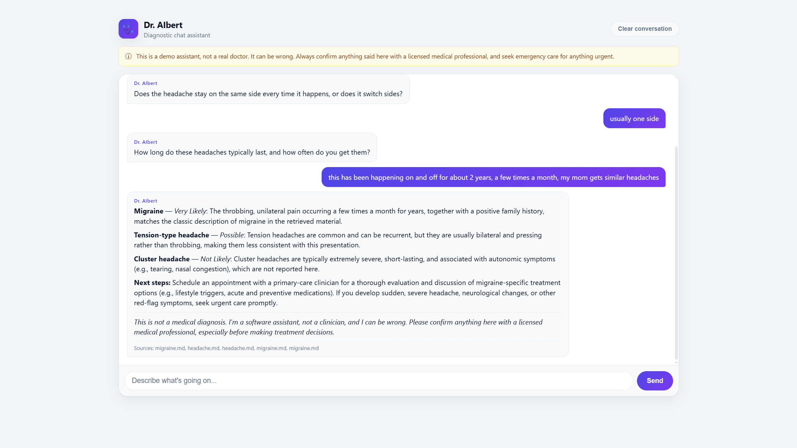
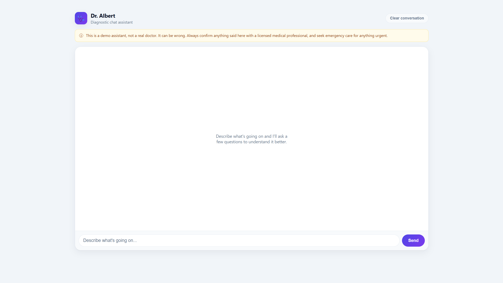
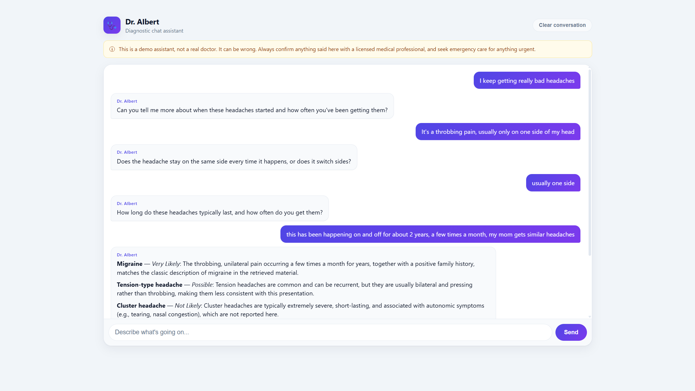

← Back to portfolio
Dr. AIbert
A conversational health-information assistant: a multi-agent diagnostic chatbot that interviews the user about their symptoms, retrieves relevant medical reference material, and produces a ranked differential of 3 conditions, each labeled Not Likely to Very Likely, with a safety disclaimer. Not a real diagnosis tool, but a structured symptom-triage assistant.


